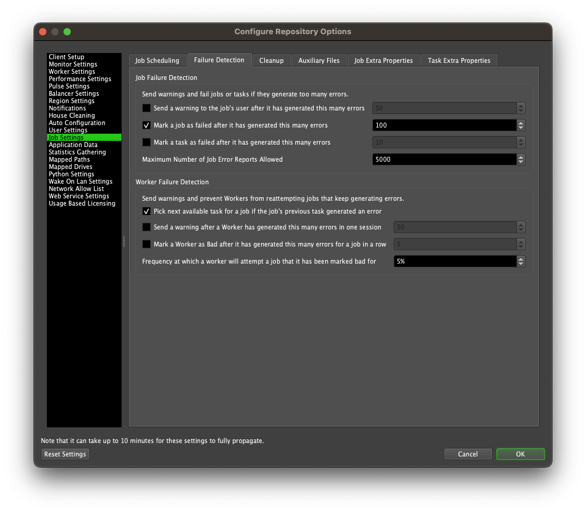
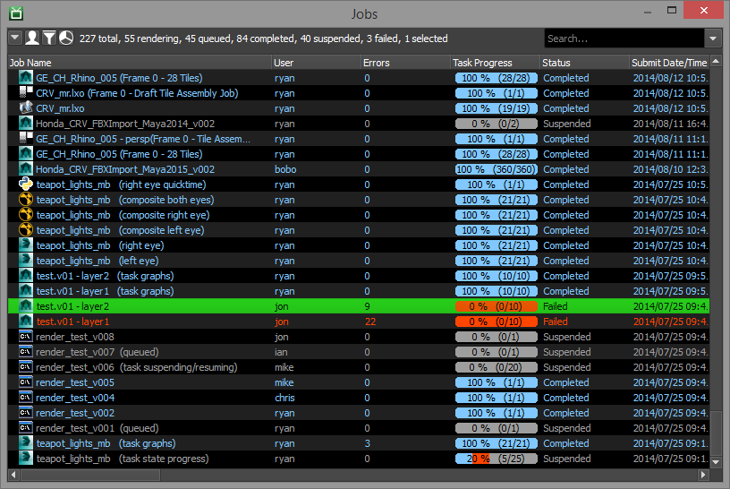
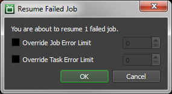
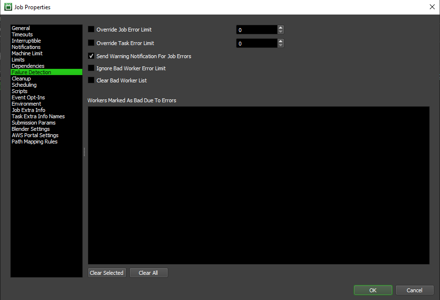

Job Failure Detection¶
Overview¶
Job Failure Detection can be used to prevent problematic Jobs from wasting previous render time on the farm. There are two types of Failure Detection, which are both explained below. By default, Jobs will fail after they have accumulated 100 errors, but this can be changed in the Job Settings section of the Repository Configuration.
Job Failure Detection¶
A Job will enter the Failed state when it has accumulated the maximum permitted number of errors. Once in the Failed state, the Job will no longer be picked up by Workers for rendering without manual intervention. Because of this, Job Failure Detection can help ensure that problematic Jobs are flagged appropriately and won’t waste precious rendering time. In the Repository Options, can setup failure thresholds for Jobs and for individual Tasks.
If you’ve resolved the problems that were preventing the Job from rendering properly, you can right-click on it in the Monitor and select ‘Resume Failed Job’. You will then be prompted with the option to ignore or override Failure Detection for this Job going forward. Note that an Error Limit of 0 indicates that there is no limit, and the Job will never be marked as Failed by Failure Detection.
If you choose not to ignore Failure Detection, make sure to clear the Job’s errors, or a single new error will result in the Job failing again, because its error limit is still over the maximum. To clear a Job’s errors, simply delete all of the Job’s Error Reports using the Job Reports Panel.
Worker Failure Detection¶
Worker Failure Detection works a little differently than Job Failure Detection. Basically, if a particular Worker reports consecutive errors for a given Job, it will add itself to the Job’s list of Bad Workers. When a Worker has been marked as bad for a particular Job, it will not try to render that Job again until it has no other Jobs available. This helps ensure that Workers aren’t wasting render time on Jobs that they likely aren’t able to render.
If the issue preventing a Worker from rendering a particular Job properly has been resolved, you can remove it from a Job’s ‘bad’ list by navigating to the ‘Failure Detection’ section of a Job’s Properties dialog. There is also an option in this section to have your Job completely ignore Worker Failure Detection, if you wish.

{kind=link}
{kind=link}
{kind=link}